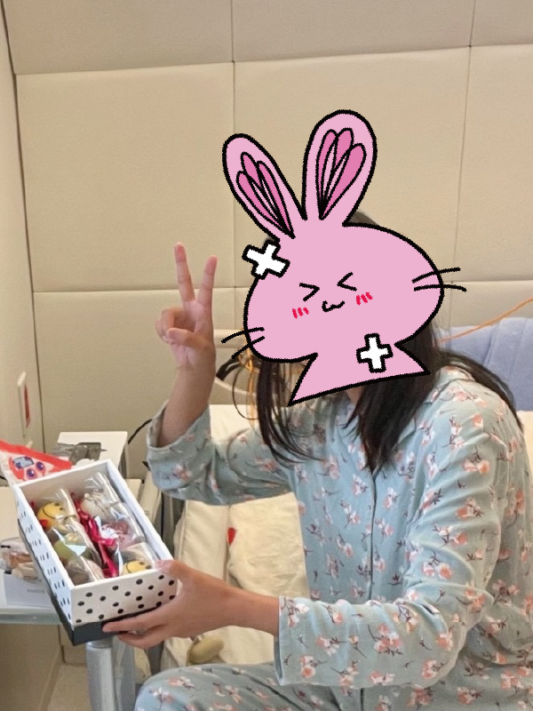

自己紹介

| 名前 | なここ |
|---|---|
| 年齢 | 27（サイト開設時） |
| 持病一覧 | 神経膠腫（グリオーマ）グレード3、バセドウ病 |
| スキル | 色彩検定2級 Webクリエイター技能検定スタンダード AdobeIllustrator、Photoshop、premiere Pro（一般業務） Microsoft office（一般業務） Visual Studio Code（勉強中） |
| 趣味 | 犬との触れ合い・ものづくり・岩盤浴 など |